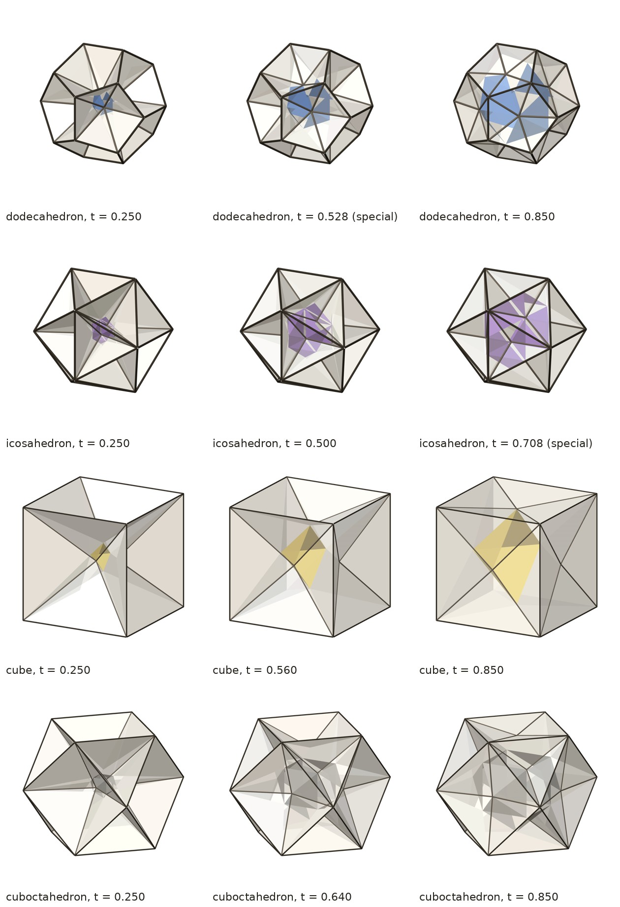
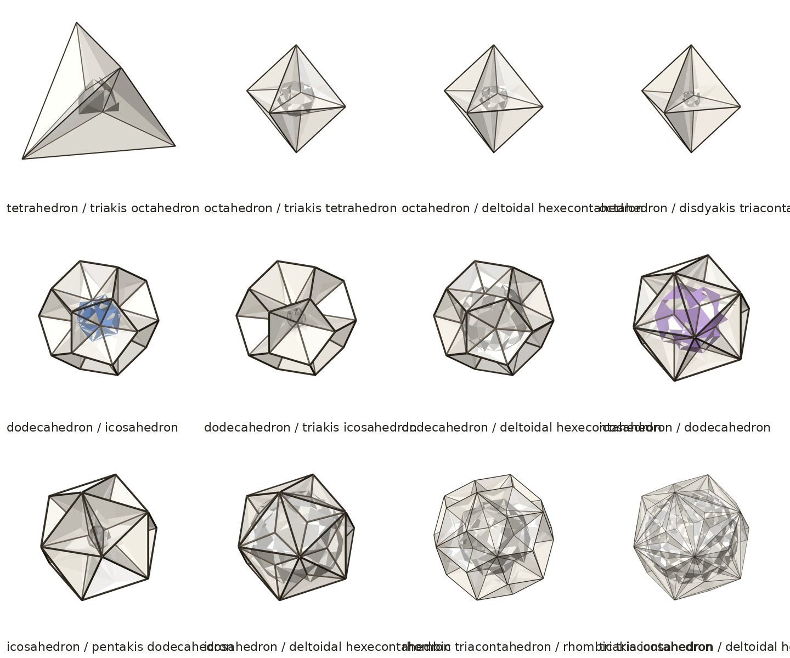
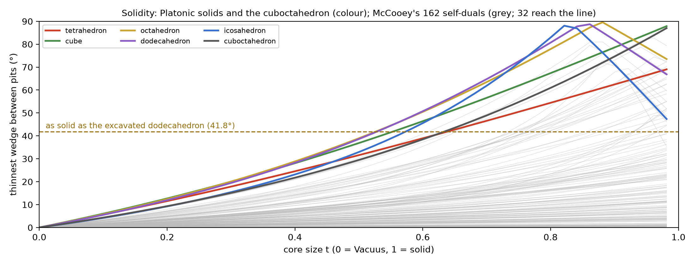

Grow the centre of a polyhedron's Vacuus into a core and every plate becomes the wall of a pit; eleven sizes are special, all quadratic in √2 or √5, and with the polar as core only the two classical excavations appear
What is known and what is new. Excavating a polyhedron by pyramids sunk into its faces is an old idea: the excavated dodecahedron is model 28 of Wenninger's Polyhedron Models [4] and one of the fifty-nine stellations of the icosahedron [3], the great dodecahedron is Poinsot's [2], and programs such as Stella make pits of any depth [5]. New here: reading the excavation as the Vacuus grown outward from its centre, which gives every polyhedron a one-parameter family with the Vacuus at one end; the condition for a special size and the complete list for the Platonic, Archimedean and Catalan solids; the census over the Vacuus catalogue and McCooey's self-duals; and the polar side.
Take a cube built from six square pyramids with their tips at the centre, remove the six outer squares, and an empty frame remains: the cube's Vacuus. DICTO's builds start there [1]. "A true vacuus or resonus barely exists", he observed on 25 November 2026: plates of zero thickness meeting at one point cannot be built. Push the meeting point outward into a small solid and the plates become the walls of pits; the frame becomes a buildable object, and a whole family of them appears between the Vacuus and the solid.

Section 2 recalls the Vacuus and the Resonus and the classical excavations. Section 3 defines the family. Section 4 proves the condition for special sizes and lists all eleven (Theorem 1). Section 5 gives their golden and silver forms and the self-similar member of the rhombic triacontahedron. Section 6 reads the special sizes as stellations. Section 7 turns to the polar side, Section 8 to building the solids as models, and Section 9 to near misses.
The Vacuus and the Resonus. For a polyhedron P with a centre O inside, the Vacuus is the set of planes through O and an edge of P (DICTO, #87 [1], #110 [6]); the Resonus is the set of planes through O parallel to a face (#120 [7]). Both are read off the polar P*: each Vacuus plate is at right angles to an edge of P*, each Resonus plane at right angles to the line to a corner of P* (#120, Theorem 4). The true Vacuus, with all plates meeting at O, is the member t = 0 of the family below. In one line, for Section 4: at a special size every pit wall lies in a face plane of the core, that is, on the core's Resonus plane moved out to its face. In one line also: the eleven special solids show no harmonic silence beyond what their symmetry forces (DICTO's Tacitus; Section 9).
Excavation and stellation. Kepler (1619) found the small and great stellated dodecahedra, Poinsot (1809) the great dodecahedron and the great icosahedron [2]; Cauchy (1813) showed that all four are stellations of the dodecahedron and the icosahedron, and Bertrand (1858) obtained them by faceting. Coxeter, Du Val, Flather and Petrie enumerated the fifty-nine stellations of the icosahedron [3]; the excavated dodecahedron is their Ef1g1, Wenninger's model 28 [4]. Messer named all 226 fully supported stellations of the rhombic triacontahedron [8]; Webb's Stella enumerates the stellations of the Archimedean duals [5].
Let P have O = 0 inside, faces f with outward unit normals nf and distances df. Its polar P* has corners nf/df. For λ > 0 put the core corner cf = λ nf/df on the axis of face f, and sink into each face the pyramid with that face as base and cf as tip. The tip lies inside the face while λ < df2; write t = λ / minf df2, so that t runs from 0 (every tip at O: the Vacuus) to 1 (the first pits close: the solid). Each pit wall is the triangle from an edge of P to a tip; at t = 0 it is a Vacuus plate, and as t grows it turns about its edge. The member at size t is the Vacuus-Solid (P, t): P less the pits. For the Platonic solids t is the depth s of each tip as a fraction of the face distance.
Proposition 1 (the pits stay apart). Checked, not proved. For every polyhedron of the Vacuus catalogue (163 rows [7]) and every one of McCooey's 162 self-dual polyhedra [9], at t = 0.1, 0.3, 0.5, 0.7 and 0.9, no two pits share an interior point (sampled exact test; study scripts/build_out_general.py). So every member is an excavated polyhedron, a solid with a pit in every face.
At most sizes the walls point nowhere in particular. At a few they all lie at once in the face planes of one other polyhedron.
Call a size special for a core Q when every pit wall lies in a face plane of a scaled copy of Q, about the same centre. Each wall turns about its edge as the tip moves, so its normal is linear in the tip's position: for the edge (u, v) of face f, m(a) = u × v − a(u × nf + nf × v) at tip height a. A special size needs, for every wall, m(a) parallel to a face normal of Q and the wall's distance from O equal to the scaled face distance of Q, with one a and one scale for all walls.
Theorem 1 (the eleven special sizes). Computer-assisted: the search is in floating point; each size listed is proved in exact arithmetic. Among the 31 Platonic, Archimedean and Catalan solids, as excavated polyhedra P and as cores Q in every relative orientation of their symmetry frames, the special depths s (tip height over face distance) are exactly the eleven below. In each, s is a root of the quadratic shown. In the first eight every face plane of Q carries a wall; in the last three only some do. In no member do the walls lie on Q's faces: they lie in its face planes, outside it. Where the pits reach λQ (proved in exact arithmetic, study 2026-11-25-partial-vacuus, exact_core_or_planes.py; no pit enters λQ in any member): in the two classical members λQ is the core, its corners exactly the pit tips; in three members (dodecahedron and icosahedron on the deltoidal hexecontahedron, tetrahedron on the triakis octahedron) λQ meets the pits at some of its corners; in the other six no pit reaches λQ, and the walls only share its planes.
| P | core Q | s | polynomial | core |
|---|---|---|---|---|
| dodecahedron | icosahedron | 5 − 2√5 = √5/φ³ | s² − 10s + 5 | whole |
| dodecahedron | triakis icosahedron | (10 − 3√5)/11 | 11s² − 20s + 5 | whole |
| dodecahedron | deltoidal hexecontahedron | √5/3 | 9s² − 5 | whole |
| icosahedron | dodecahedron | 3√5 − 6 = 3/φ³ | s² + 12s − 9 | whole |
| icosahedron | pentakis dodecahedron | (6√5 − 9)/11 | 11s² + 18s − 9 | whole |
| icosahedron | deltoidal hexecontahedron | (30 − 9√5)/11 | 11s² − 60s + 45 | whole |
| rhombic triacontahedron | rhombic triacontahedron (scale 1/φ) | 3 − √5 = 2/φ² | s² − 6s + 4 | whole |
| triakis icosahedron | deltoidal hexecontahedron | (42 − 11√5)/19 | 19s² − 84s + 61 | whole |
| tetrahedron | triakis octahedron | 9 − 6√2 = 3/δ² | s² − 18s + 9 | planes only |
| octahedron | deltoidal hexecontahedron | (12 − 3√5)/11 | 11s² − 24s + 9 | planes only |
| octahedron | disdyakis triacontahedron | 3 − 6√5/5 | 5s² − 30s + 9 | planes only |
Method. For every ordered pair (P, Q) and each of the 24 rotations of the common frame (three perpendicular half-turn axes), the first wall gives the candidate depths (one linear condition per face normal of Q), each candidate is tested on every wall of P (directions to 10−8, distances to 10−7), the depth is refined over all walls and its integer polynomial found and factored, keeping the factor with the matching root. The core was checked by intersecting the half-spaces of all walls and comparing its face count with Q's. Scripts special_depths_all.py, exact_forms.py, special_scenes.py.
Proposition 2 (the polar as core). Checked. With the polar P* itself as core, the only special members over the 163 solids of the Vacuus catalogue and McCooey's 162 self-dual polyhedra are the excavated dodecahedron, Vacuus-Solid (dodecahedron, 5 − 2√5), and the great dodecahedron, Vacuus-Solid (icosahedron, 3√5 − 6). Neither the three permutohedra in three dimensions nor the twelve associahedra of the permutohedron-leads study (2026-11-24) have any special size against these solids.

The icosahedral depths are golden numbers: 5 − 2√5 = √5/φ³, 3√5 − 6 = 3/φ³ and 3 − √5 = 2/φ². The tetrahedron's depth is the silver counterpart, 9 − 6√2 = 3/δ² with δ = 1 + √2. One member reproduces its own solid: the rhombic triacontahedron at s = 3 − √5 has its walls in the face planes of a rhombic triacontahedron scaled by 1/φ: the planes of a smaller copy of itself (the copy does not touch the pits). Why the icosahedral solids carry all eight members whose walls use every face plane of Q is a question for later (Section 10); the mechanism is that one equation in one unknown must have a common root for every wall, and the icosahedral edges and face normals share the golden directions.
At a special size every wall lies in a face plane of the core, and the excavated solid has no other faces, since the pits cover every face of P. So its whole surface lies in the core's planes: it is a union of cells of the core's stellation diagram, a stellation of Q. The two classical members are stellations of the icosahedron and the dodecahedron, as Cauchy's theorem requires; the six others are stellations of Catalan solids. So the family meets the classical route at its special sizes: building out the Vacuus and extending the faces of a core give the same solid there, and nowhere else, since at every other size the walls lie in planes of no fixed solid.
Take the polar reciprocal of a Vacuus-Solid in the unit sphere: one corner for each distinct wall plane, its pole. Each wall contains an edge of P, so its pole lies on the polar line of that edge, which is the line of the matching edge of P*. Hence, for every member of every family, the corners of the reciprocal lie on the edge lines of P*: the polar twin is P* with its corners pushed out along its own edges. We call these polar twins Vacuus-Polares (singular Vacuus-Polaris). In two members several extended edges meet at single points on the face axes of P*, so the twin is a spiked P*: the great dodecahedron's twin is the small stellated dodecahedron (twelve tips at height √5 in units of the face distance), and the excavated dodecahedron's twin has its twenty corners at height 3 on the icosahedron's face axes, the corners of the great stellated dodecahedron. For the other ten special members the corners lie on the edge lines without meeting. As t → 0 every pole runs out to infinity: the polar of the true Vacuus has its corners at infinity along the edge directions of P*, which by #120, Theorem 4 (b), are the normals of the Vacuus plates. A Resonus counterpart by translation does not exist: moving every Resonus plane outward by the same fraction only gives a scaled copy of P. (Script polar_test.py; control: the great dodecahedron gives the small stellated dodecahedron.)
As models, a Vacuus-Solid has a knife edge along every edge of P, where two pits meet, and the material between neighbouring pits is a wedge whose angle grows with t from 0 at the Vacuus. We measure the thinnest wedge of each member and compare it with the two classical members as models: 41.81° for the excavated dodecahedron and 63.43° for the great dodecahedron. Every Platonic, Archimedean and Catalan solid, every bipyramid and every trapezohedron reaches the excavated dodecahedron's 41.81° at some size (from about t = 0.54 to 0.84), as do 22 of the 92 Johnson solids, one prism, one antiprism and 32 of McCooey's 162 self-duals; the others stay thinner at every size and can be built as card frames, not as solids.

The octahedron at s = 3/5 comes closest to a twelfth special size. Twelve of its 24 walls lie on the face planes of a triakis tetrahedron, and the other twelve on those of the opposite triakis tetrahedron, its image through O. No single core takes all 24, since the octahedron is centrally symmetric and the triakis tetrahedron is not. (Checked in exact arithmetic.)
In the golden cycle of Vajrayana (#35), the step from the Cleo star to its hull D′ adds twelve inward pentagonal pyramids and thirty valley tetrahedra; the twelve pyramids are exactly the pits of Vacuus-Solid (dodecahedron, 15/2 − 3√5), an ordinary member, not a special one. No other pair of nested shells of the golden cycle or of Double Vision (#32, #33) holds a full set of pits of any family. The eleven special solids are silent, in the sense of spherical harmonics of their face directions, exactly in the degrees their symmetry forces and in no other. These are recorded for completeness; none changes the results above.
(1) A symbolic proof of the twelve depths from exact coordinates, and a Lean statement of them. (2) Which of Messer's 226 stellations is the rhombic triacontahedron's special member, and which stellations of the Archimedean duals are the other five. (3) The three members whose walls use only some of Q's face planes: what solid do their planes bound? (4) Why all eight members whose walls use every face plane of Q are icosahedral.
We set out to show that the Vacuus of every polyhedron opens into a family of excavated polyhedra, and to find where that family meets the classical star polyhedra. New here, as far as the sources checked show: the family and its parameter; the condition for special sizes and the complete list of eleven for the Platonic, Archimedean and Catalan solids, with their exact forms; the census with the polar as core over 163 + 162 polyhedra; the reading of the special sizes as stellations; the polar twins and their law; the solidity measure. Known and credited at point of use: the excavated dodecahedron (Wenninger, the Fifty-Nine Icosahedra), the great dodecahedron (Poinsot), the stellation theory (Cauchy, Bertrand, Coxeter et al., Messer), excavation as an operation (Stella; Austin), McCooey's self-dual polyhedra and their names.
Wikipedia, "Excavated dodecahedron", "List of Wenninger polyhedron models", "Kepler–Poinsot polyhedron"; MathWorld, "Rhombic Triacontahedron Stellations", "Archimedean Dual Stellations"; G. Hart, "Stellations of the Rhombic Triacontahedron"; R. Webb, software3d.com; R. Austin, robertlovespi.net (excavation posts); Polytope Wiki; D. McCooey, Visual Polyhedra (self-dual pages and data files). Searched 26 November 2026; the books and Messer's paper were not opened.
Study 2026-11-25-partial-vacuus: scripts special_depths.py, special_depths_all.py, special_check.py, exact_forms.py, special_scenes.py, build_out.py, build_out_general.py, polar_test.py, tacitus_excavated.py, gap_match.py, rebuild_O.py; data data-*.json; logs. Every script prints FINAL ok only after its control (the excavated dodecahedron at 5 − 2√5 and the great dodecahedron at 3√5 − 6 found again; the great dodecahedron's polar the small stellated dodecahedron).
[1] DICTO, the Vacuus (#87), DICTO DOI on dictospheres.com.
[2] L. Poinsot, Mémoire sur les polygones et les polyèdres, J. École Polytechnique 10 (1810); A. L. Cauchy, Recherches sur les polyèdres, J. École Polytechnique 9 (1813).
[3] H. S. M. Coxeter, P. Du Val, H. T. Flather, J. F. Petrie, The Fifty-Nine Icosahedra, University of Toronto Studies (1938).
[4] M. J. Wenninger, Polyhedron Models, Cambridge University Press (1971), model 28; Dual Models (1983).
[5] R. Webb, Stella4D and enumeration of stellations, software3d.com.
[6] DICTO, Walls of Silence, #110. DICTO DOI: 10.5281/zenodo.24272477.
[7] DICTO, The Vacuus and the Resonus, #120. DICTO DOI: 10.5281/zenodo.24521888.
[8] P. W. Messer, Stellations of the rhombic triacontahedron and beyond, Structural Topology 21 (1995).
[9] D. McCooey, Visual Polyhedra, dmccooey.com/polyhedra (self-dual polyhedra; data used as given).